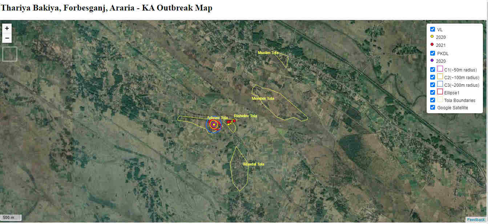
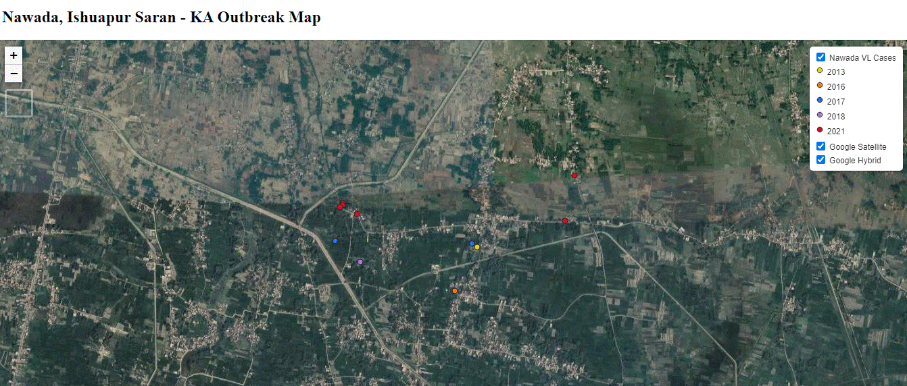
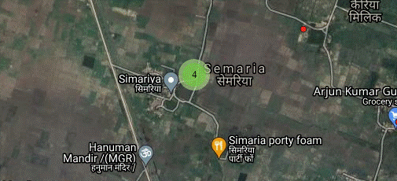
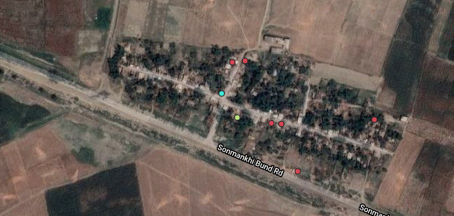
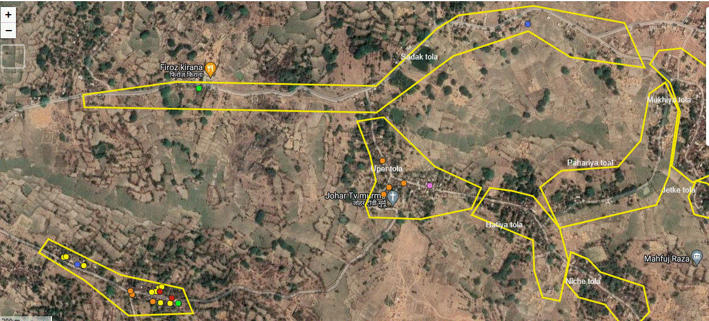
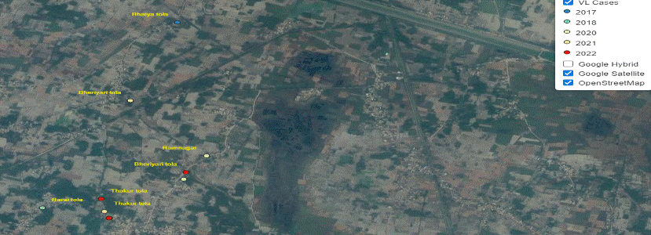
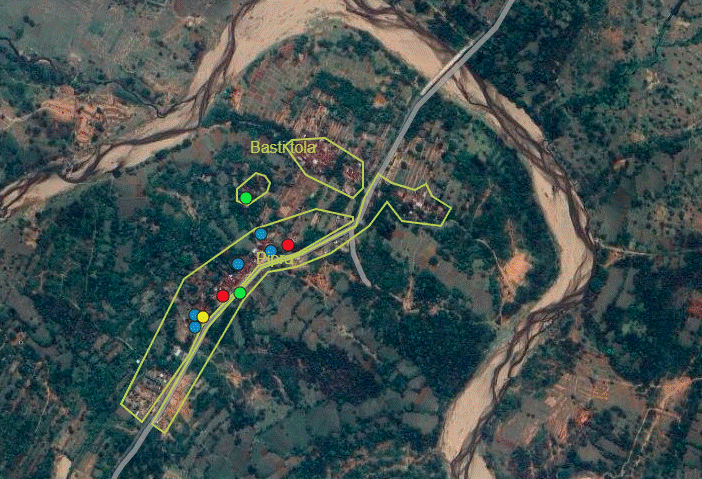

VL Research | CARE Bihar
KA Outbreak Maps
VLTD Study Activity Reports
KA Publications
See latest map
MAP OF ALL KA OUTBREAK CASES
CANDIDATE OUTBREAK VILLAGE MAP
Balasath Sitamarhi and Mayurbhanga Dumka/
Chotka Baneya Saran
Paharichak, Rahar Diyara Sonepur, Saran
Pinjaur, Jehanabad
Thariya Bakiya, Araria

Nawada, Ishuapur Saran

Sakti Mahagama, Kahalgaon Bhagalpur

Suraj Nagar, Khagaria

Murbhanga, Dumka

Jagapakar Harsidhi, East Champaran

Saraiya, Jharkhand

Go to top